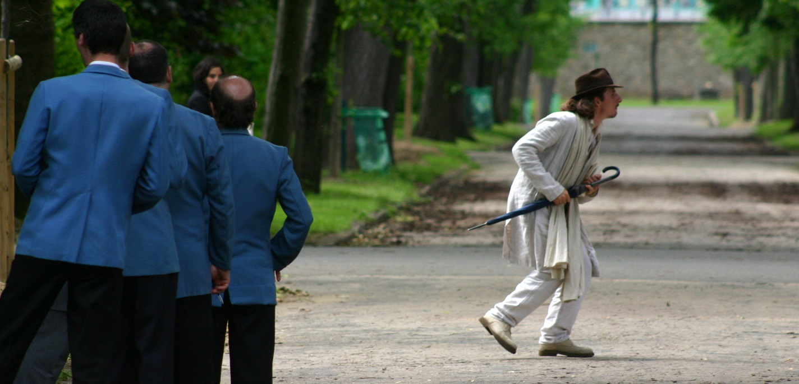

Art dramatique
Acting
- Le Tartuffe ou l’imposteur, Molière, par Valéry Rybakov, dans le rôle Orgon
- Les trois sœurs, Tchekhov, par Michaël tarna, dans le rôle Fiodor Illitch Kouliguine
- Le Malade imaginaire, Molière, par Valéry Rybakov, dans le rôle Argan/Béralde
- Joyce Carol Oates, par Robert Cordier
- Charivari de Textes, par R.Cordier & M. Doublet
- Fables de la Fontaine, par Valéry Rybakov
- Ismène, Bruno Di Rosa, par Erwan Mahéo
- Noce de Sang, F.G. Lorca, par G. Chauviré
- L’amour de Phèdre, par Théâtre de Rennes
Films
- Life Time, Anne Murat, CM, Rôle central.
- Origin Bound, New Century Film, David Li, (LM) : Rôle du médecin
- Pleine Lune, Juliette Marrécau, (CM) : Rôle principal
- A un fil, Lucile Chrétien, (CM) : rôle de l’Ange-mime Marceau
- Le Voyage de Théophile, (documentaire) 1er Rôle : T. Gautier jeune, réal. Serge Bourguignon
- Marie-Antoinette, personnage du précieux, réalisé par Sofia Coppola.